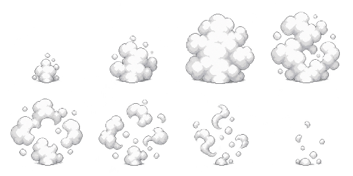
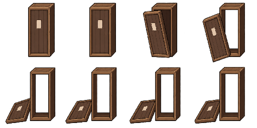
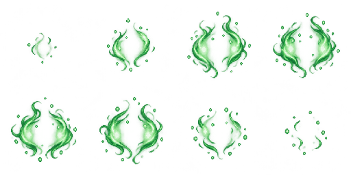

Kage Bunshin, Edo Tensei e Shousen
Estudo visual v1 • 16/10/2026. Fontes originais e prompts preservados. Os manequins ilustram composição e etapas; o jogo usará os próprios ninjas. Plano e análise de reutilização.
Fumaça compartilhada
Mesma folha para criação e desaparecimento; três escalas para comparar. Os manequins mantêm a transparência dos clones. A quantidade abaixo é apenas uma comparação de tamanho.
Folha e fonte original

Fonte original da fumaça
Edo Tensei — caixão e revelação
Caixão emerge pelo recorte do chão, tampa abre, o ninja aparece dentro e sai. A abertura da folha tem alpha transparente. O interior escuro e o ninja são camadas separadas.
Folha e fonte original

Fonte original do caixão
Shousen — aproximação e atendimento
O médico se aproxima e trata o aliado com chakra nas mãos. A barra ilustra cura gradual. Na integração, ordens, afastamento e stun interrompem o atendimento.
Folha e fonte original

Fonte original do chakra
Propostas para avaliação, ainda não integradas ao jogo. Os controles desta página não alteram a configuração do laboratório.